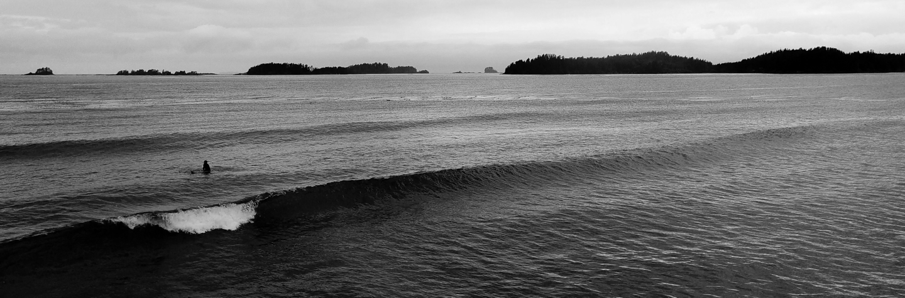

Growing up in Alaska,
surfing isn’t the first thing that comes to mind. For me as a kid it was the only thing I wanted to do. I would sketch waves and surfboards, daydream about traveling to Hawaii and surfing Pipeline, and constantly watch Johnny Tsunami on the Disney channel. As I got older and a little more confident knowing this was something I wanted to do; I saved up the tip money from my bike tour company summer job and bought a beautiful lime green “Phat Pig” longboard. I didn’t have enough money for a wetsuit at the time (which is suggested since water temperature in Alaska can give you hypothermia in under 3 min) but a close friend and mentor let me borrow his until I saved up enough to get my own. That first paddle out to the line up was a culmination of emotions: fear, excitement, and addiction to finding the perfect wave.
I’m still searching for that perfect wave and have surfed in California, Oregon,
Hawaii, Costa Rica, and Bali since paddling out that first day. In my time in
Costa Rica I followed another passion, coffee. I worked on a coffee farm and was
trying to figure how to source directly for a coffee company I was working for.
The owner of the farm invited me back to his home and we talked about surfing
because he’d grown up surfing in Costa Rica and asked if I had plans on surfing.
I did, but I was always open to local knowledge as they tend to know where the
best waves were. He asked where I was going and I told him, he acknowledged that
that was a good place to go and I should find some good surf.
The endless summer is a transcendent surf film in the community and beyond.
In one of the scenes they are surfing this beautiful right hand wave that seems
to go on forever. That wave is in Costa Rica, as well as Robert August and his
shaping bay. To say the least, it as a surf spot that I had mind surfed for
years. Tamarindo is a small quiet surfing town with a big appetite for
boondockers, travelers, surferes, backpackers, and funny enough remote workers.
My introduction to UX/UI Design started in Costa Rica 2016 when I met a remote
worker for IBM. We met and went out surfing a couple times, and I would see him
working early in the morning on his computer and finally got the courage to ask
what it was that he did for a living. After he explained what he did, I asked
“And you can do this all remotely?” He responded in a half chuckle and said that
his team was pretty cool and as long as the work was done. I was also super
intrigued that he got to design things on the computer and also just got to be
paid to be creative and solve problems.
It really seemed like my dream job. We became great friends and the following
year we met up in Bali.
In Bali my friend had left IBM and was doing freelance work now as a designer
as well as working on his own sustainable company; I was knee deep in starting
my coffee company, but something in the back of my mind was lingering. I was so
passionate about coffee, but equally with surfing and traveling. I bugged my
friend a little bit more this time on how to get into the design world and he
mentioned a few options. After a week of surf and 5 weeks in Asia, I found
myself back in Alaska.
Back home I finished a full business plan, and was able to scrounge up the money
for a small coffee company in Alaska, but something didn’t feel right. I was
engaged at the time, my other half living in Phoenix and commuting every week
from Alaska (I worked for an Airline at the time), and we just purchased a home
in Phoenix. To say the least it didn’t feel like the right time to open a
company with no intent on living in the place it was located. I was disappointed
that this opportunity had passed having spent 3 years trying to start it.
Two weeks after moving to Phoenix, searching for jobs now, I was talking to a
friend of my fiance’s and she mentioned that I should think about becoming a
designer and she knew a company that had a program. Immediately alarms went off,
and I had to clarify that it was indeed the same design that my friend was
doing. It was in fact, and I without hesitation enrolled in this opportunity
that I thought passed me by years ago. In the future I would love to design and
solve problems in the coffee industry, travel industry, and or work for a
company that is making a difference for the environment.
I messaged my friend, who was still in Bali and let him know that I was going
to be a designer. He congratulated me and offered any help or support that I
needed. I felt like I was part of this really cool club now and doing something
that I genuinely knew I would love, kind of like surfing. From all my past
experiences I’ve learned so many things, but some of the biggest lessons that
I’m carrying into my new career in design is that there truly is no success
without failure, traveling has opened my eyes to so many cultures and the way
people think, and lastly receiving feedback and listening to others has changed
the way I view and tackle problems.